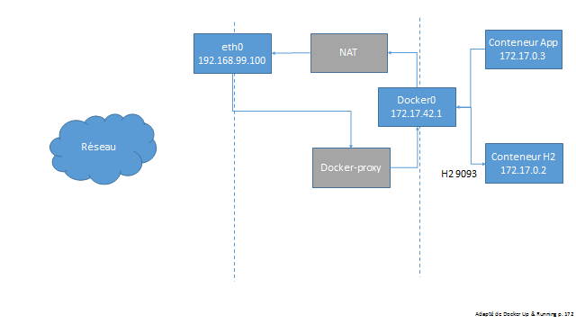
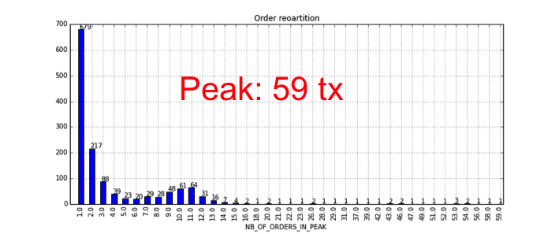

Comment tester et optimiser la performance d'un SI ?
22 octobre 2015
Marc BOJOLY
Co-fondateur du Performance User Group Paris
Cyril PICAT
OCTO Technology Lausanne, consultant
Le projet : migration d'une banque vers une nouvelle plateforme titres

Quelques chiffres
Clients : x10
Portefeuilles titres : x5
Positions : x3
Titres : +50%
Ordres de Bourse : x2
Le projet : migration d'une banque vers une nouvelle plateforme titres

Méconnaissances
| Nier l'existence du problème | On a bien travaillé, ça va passer |
| Nier l'existence de solutions | C'est impossible à tester sauf en prod |
| Nier la fiabilité des solutions | La charge ne sera pas représentative |
| Mettre en doute ses capacités | On n'y arrivera jamais |
Idées reçues sur les pré-requis
- Une pré-production identique à la production
- Simuler l'ensemble des activités de la banque
Idées reçues sur les tests de charge
Tester en automatique ? Impossible même avec <un nom de produit ici>Idées reçues sur le diagnostic
Les problèmes sont sur le mainframeCe sont des idées reçues
Notre objectif, vous montrer
- comment adapter vos pré-requis à vos enjeux
- comment aborder les tests de charge dans un SI
- comment ne pas être piégé par les diagnostics préconçus
Dans un monde parfait...
“Fais de ta vie un rêve, et d'un rêve une réalité.” Antoine de Saint-Exupéry - Cahiers de Saint-Exupéry (1900-1944)
Rêve : une vue intégrée de la performance
DynatraceRéalité : Qui le fait au niveau d'un SI?

Google Dapper
Réalité : Commencer par des outils simples
Analyse de logs
(python, pandas...)Collecte d'outils systèmes
(nmon, vmstat...)
Rêve : Tout ce qu'il faut pour faire les tests
- Des développements terminés
- Des données migrées
- Des personnes disponibles.... et colocalisées
Réalité : Les intangibles
- Un environnement opérationnel
- Un jeu de données minimal
- Une zone de mesure isolée
Pour le reste...
Les problèmes peuvent sembler vertigineux
Il faut "cadrer" le chantier
- Factualiser les volumes existants et cibles
- Lister les problèmes existants
- Brainstormer sur les problèmes potentiels

Les problèmes "usuels"
- Capacité en terme de nombre de transactions/jour
- Augmentation de volumétrie (x2)
- SLA temps de réponse end-to-end
- Lenteurs actuelles
- Augmentation du nombre d'utilisateurs
- Impact sur la durée des batchs
- Latence et temps de réponse pour les utilisateurs distants
Et ensuite ?
La carte vous aide à visualiser et à prioriser, elle ne "résout" pas les problèmes
Chaque problème reste complexe et lié au reste du SI
Diviser pour mieux régner
2 patterns
- Diviser/découpler : passer d'un test de N systèmes à un test de k<N systèmes (idéalement 1)
- Simplifier : réduire la dimensionnalité (cas de tests, données etc.)
Diviser/découpler : un exemple

Diviser/découpler : un exemple

Et maintenant ?
Ne prévoyez pas un test de charge pour tous les problèmes !
Penser à d'autres outils

Analyse de l'existant
Modélisation et extrapolation
Test de charge de l'existant (données, systèmes)
Test de charge de la cible (données, systèmes)
Où pouvez-vous vous "planter" ?
Mauvaise connaissance de la performance existante
Mauvaise connaissance des usages existants
Bonnes pratiques de tests de charges (application par application)
Délimiter le périmètre testé
- Car un test de charge reste un test automatisé
- Car un test en erreur ne sert à rien
Comment ?
- Choisissez soigneusement votre jeu de données
- Ou développez des bouchons
Bouchonner
- Les composants utilisés systématiquement
- Le plus simplement possible
Modéliser scientifiquement
Modéliser le comportement de mes utilisateurs ?
- Combien d'utilisateurs simultanés ?
- Qu'est-ce qu'un utilisateur simultané ?
Modélisation scientifique
- La vérité est en production
- Un modèle : moyenne ET percentile 99th

Exemple de lois de Poisson
Modélisaton : soyez prédictifs
Si vous n'avez pas de statistiques production,
proposez un modèle de prévision du nombre d'utilisateurs
Modélisation : soyez prédictifs
Si vous n'avez pas de statistiques production,
proposez un modèle de prévision de leur utilisation

Modélisation : comment l'utiliser ?
Définissez dans vos tests d'injection locaux le nombre d'utilisateurs "simultanés" et le temps de réflexion
val clientSearchChain = group("client_search_page") {
exec(http("client_search_html")
.get("""/ebankingAdmin/xxxxx/root/contract/contractlist/""")
}
).pause(7,8) //Pause between 7 and 8 seconds
val scn = scenario("AdminSimulation").repeat(1) {
exitBlockOnFail {
exec(loginChain).exec(clientSearchChain)//No logout, 90% of users don't
}
}
setUp(scn.inject(rampUsers(120).over(60))).protocols(httpProtocol) //This will go from 0 to 120 users in 60 seconds
Tests de charge par application
Une brique de base de la performance du SI
Comment fait-on pour manger un éléphant ? Bouchée par bouchée.
DEMO Quizz : quel est le temps de réponse d'une application ?
70 ms. de traitement
7 appels en base de données, 14 ms. chacun
curl -X POST \
-H "Accept: applicaiton/json" \
-H "Content-Type: application/json" \
-d '{"cpuIntensiveComputationsDuration":70, "databaseCallsNumber":7, "databaseCallDuration":14 }' \
http://$HOST:8080/compute
$ ./sh/poc1.sh
% Total % Received % Xferd Average Speed Time Time Time Current
Dload Upload Total Spent Left Speed
100 252 100 160 100 92 310 178 --:--:-- --:--:-- --:--:-- 310
Call HTTP Ressources : For an HTTP ressources total of 0.0 ms.
Call the database 7 times during 14 ms. each for a total of 401 ms.
CPU intensive compute 69ms.
10-18 16:32:22 jdbc:
/**/CallableStatement call98 = conn7.prepareCall("call sleep(?)");
10-18 16:32:22 jdbc: SESSION_PREPARE_READ_PARAMS 30
10-18 16:32:22 jdbc:
/**/call98.setLong(1, 14L);
10-18 16:32:22 jdbc:
/**/call98.execute();
10-18 16:32:22 jdbc: COMMAND_EXECUTE_QUERY 30
10-18 16:32:22 jdbc: RESULT_CLOSE 31
10-18 16:32:22 jdbc:
/**/call98.close();
10-18 16:32:22 jdbc: COMMAND_CLOSE 30
10-18 16:32:22 jdbc:
/**/conn7.getAutoCommit();
10-18 16:32:22 jdbc:
/**/conn7.getWarnings();
10-18 16:32:22 jdbc:
/**/conn7.clearWarnings();
10-18 16:32:22 jdbc:
/**/conn7.getAutoCommit();
10-18 16:32:22 jdbc:
/**/CallableStatement call99 = conn7.prepareCall("call sleep(?)");
10-18 16:32:22 jdbc: SESSION_PREPARE_READ_PARAMS 32
10-18 16:32:22 jdbc:
/**/call99.setLong(1, 14L);
10-18 16:32:22 jdbc:
/**/call99.execute();
10-18 16:32:22 jdbc: COMMAND_EXECUTE_QUERY 32
10-18 16:32:22 jdbc: RESULT_CLOSE 33
10-18 16:32:22 jdbc:
/**/call99.close();
10-18 16:32:22 jdbc: COMMAND_CLOSE 32
10-18 16:32:22 jdbc:
/**/conn7.getAutoCommit();
10-18 16:32:22 jdbc:
/**/conn7.getWarnings();
10-18 16:32:22 jdbc:
/**/conn7.clearWarnings();
10-18 16:32:22 jdbc:
/**/conn7.getAutoCommit();
10-18 16:32:22 jdbc:
/**/CallableStatement call100 = conn7.prepareCall("call sleep(?)");
10-18 16:32:22 jdbc: SESSION_PREPARE_READ_PARAMS 34
10-18 16:32:22 jdbc:
/**/call100.setLong(1, 14L);
10-18 16:32:22 jdbc:
/**/call100.execute();
10-18 16:32:22 jdbc: COMMAND_EXECUTE_QUERY 34
10-18 16:32:22 jdbc: RESULT_CLOSE 35
10-18 16:32:22 jdbc:
/**/call100.close();
10-18 16:32:22 jdbc: COMMAND_CLOSE 34
10-18 16:32:22 jdbc:
/**/conn7.getAutoCommit();
10-18 16:32:22 jdbc:
/**/conn7.getWarnings();
10-18 16:32:22 jdbc:
/**/conn7.clearWarnings();
10-18 16:32:22 jdbc:
/**/conn7.getAutoCommit();
10-18 16:32:22 jdbc:
/**/CallableStatement call101 = conn7.prepareCall("call sleep(?)");
10-18 16:32:22 jdbc: SESSION_PREPARE_READ_PARAMS 36
10-18 16:32:22 jdbc:
/**/call101.setLong(1, 14L);
10-18 16:32:22 jdbc:
/**/call101.execute();
10-18 16:32:22 jdbc: COMMAND_EXECUTE_QUERY 36
10-18 16:32:22 jdbc: RESULT_CLOSE 37
10-18 16:32:22 jdbc:
/**/call101.close();
10-18 16:32:22 jdbc: COMMAND_CLOSE 36
10-18 16:32:22 jdbc:
/**/conn7.getAutoCommit();
10-18 16:32:22 jdbc:
/**/conn7.getWarnings();
10-18 16:32:22 jdbc:
/**/conn7.clearWarnings();
10-18 16:32:22 jdbc:
/**/conn7.getAutoCommit();
10-18 16:32:22 jdbc:
/**/CallableStatement call102 = conn7.prepareCall("call sleep(?)");
10-18 16:32:22 jdbc: SESSION_PREPARE_READ_PARAMS 38
10-18 16:32:22 jdbc:
/**/call102.setLong(1, 14L);
10-18 16:32:22 jdbc:
/**/call102.execute();
10-18 16:32:22 jdbc: COMMAND_EXECUTE_QUERY 38
10-18 16:32:22 jdbc: RESULT_CLOSE 39
10-18 16:32:22 jdbc:
/**/call102.close();
10-18 16:32:22 jdbc: COMMAND_CLOSE 38
10-18 16:32:22 jdbc:
/**/conn7.getAutoCommit();
10-18 16:32:22 jdbc:
/**/conn7.getWarnings();
10-18 16:32:22 jdbc:
/**/conn7.clearWarnings();
10-18 16:32:22 jdbc:
/**/conn7.getAutoCommit();
10-18 16:32:22 jdbc:
/**/CallableStatement call103 = conn7.prepareCall("call sleep(?)");
10-18 16:32:22 jdbc: SESSION_PREPARE_READ_PARAMS 40
10-18 16:32:22 jdbc:
/**/call103.setLong(1, 14L);
10-18 16:32:22 jdbc:
/**/call103.execute();
10-18 16:32:22 jdbc: COMMAND_EXECUTE_QUERY 40
10-18 16:32:23 jdbc: RESULT_CLOSE 41
10-18 16:32:23 jdbc:
/**/call103.close();
10-18 16:32:23 jdbc: COMMAND_CLOSE 40
10-18 16:32:23 jdbc:
/**/conn7.getAutoCommit();
10-18 16:32:23 jdbc:
/**/conn7.getWarnings();
10-18 16:32:23 jdbc:
/**/conn7.clearWarnings();
10-18 16:32:23 jdbc:
/**/conn7.getAutoCommit();
10-18 16:32:23 jdbc:
/**/CallableStatement call104 = conn7.prepareCall("call sleep(?)");
10-18 16:32:23 jdbc: SESSION_PREPARE_READ_PARAMS 42
10-18 16:32:23 jdbc:
/**/call104.setLong(1, 14L);
10-18 16:32:23 jdbc:
/**/call104.execute();
10-18 16:32:23 jdbc: COMMAND_EXECUTE_QUERY 42
10-18 16:32:23 jdbc: RESULT_CLOSE 43
10-18 16:32:23 jdbc:
/**/call104.close();
10-18 16:32:23 jdbc: COMMAND_CLOSE 42
10-18 16:32:23 jdbc:
/**/conn7.getAutoCommit();
10-18 16:32:23 jdbc:
/**/conn7.getWarnings();
10-18 16:32:23 jdbc:
/**/conn7.clearWarnings();
10-18 16:32:23 jdbc:
/**/conn7.getAutoCommit();
192.168.99.1 - - [18/Oct/2015:16:32:22 +0000] "POST /compute HTTP/1.1" 200 160 "-" "curl/7.44.0" 493
DEMO & Quizz : quel est le temps de réponse d'une chaîne applicative dans un SI ?
7 applications identiques à la précédente (70 ms. de traitement, 7 x 14 ms. de BD)
Appels synchrones séquentiels
curl -X POST \
-H "Accept: applicaiton/json" \
-H "Content-Type: application/json" \
-d '{"cpuIntensiveComputationsDuration":70, "databaseCallsNumber":7, "databaseCallDuration":14, "serviceCalls":[{"computationDescription":{"cpuIntensiveComputationsDuration":70, "databaseCallsNumber":7, "databaseCallDuration":14}, "callsNumber":6 }]}' \
http://$HOST:8080/compute
$ ./sh/poc2.sh
% Total % Received % Xferd Average Speed Time Time Time Current
Dload Upload Total Spent Left Speed
100 1417 100 1171 100 246 881 185 0:00:01 0:00:01 --:--:-- 881
Call HTTP Ressources : {
Call HTTP Ressources : For an HTTP ressources total of 0.0 ms.
Call the database 7 times during 14 ms. each for a total of 113 ms.
CPU intensive compute 68ms.
{,
{
Call HTTP Ressources : For an HTTP ressources total of 0.0 ms.
Call the database 7 times during 14 ms. each for a total of 114 ms.
CPU intensive compute 65ms.
{,
{
Call HTTP Ressources : For an HTTP ressources total of 0.0 ms.
Call the database 7 times during 14 ms. each for a total of 112 ms.
CPU intensive compute 68ms.
{,
{
Call HTTP Ressources : For an HTTP ressources total of 0.0 ms.
Call the database 7 times during 14 ms. each for a total of 112 ms.
CPU intensive compute 68ms.
{,
{
Call HTTP Ressources : For an HTTP ressources total of 0.0 ms.
Call the database 7 times during 14 ms. each for a total of 115 ms.
CPU intensive compute 68ms.
{,
{
Call HTTP Ressources : For an HTTP ressources total of 0.0 ms.
Call the database 7 times during 14 ms. each for a total of 113 ms.
CPU intensive compute 68ms.
{,
For an HTTP ressources total of 1126.0 ms.
Call the database 7 times during 14 ms. each for a total of 116 ms.
CPU intensive compute 68ms.
DEMO & Quizz : quel est le temps de réponse de la même chaîne dans une modélisation plus proche de la réalité ?

Implémentation de ce Quizz
Diokles : An Information System scale performance simulator
https://github.com/mbojoly/diokles
$ sudo docker-machine ssh default
$$ sudo tc qdisc add dev docker0 root netem delay 10ms
$$ sudo tc qdisc show dev docker0
$$ #After demo
$$ sudo tc qdisc del root dev docker0
$ ./sh/poc2.sh
% Total % Received % Xferd Average Speed Time Time Time Current
Dload Upload Total Spent Left Speed
100 1417 100 1171 100 246 328 69 0:00:03 0:00:03 --:--:-- 328
Call HTTP Ressources : {
Call HTTP Ressources : For an HTTP ressources total of 0.0 ms.
Call the database 7 times during 14 ms. each for a total of 394 ms.
CPU intensive compute 69ms.
{,
{
Call HTTP Ressources : For an HTTP ressources total of 0.0 ms.
Call the database 7 times during 14 ms. each for a total of 398 ms.
CPU intensive compute 64ms.
{,
{
Call HTTP Ressources : For an HTTP ressources total of 0.0 ms.
Call the database 7 times during 14 ms. each for a total of 397 ms.
CPU intensive compute 68ms.
{,
{
Call HTTP Ressources : For an HTTP ressources total of 0.0 ms.
Call the database 7 times during 14 ms. each for a total of 396 ms.
CPU intensive compute 67ms.
{,
{
Call HTTP Ressources : For an HTTP ressources total of 0.0 ms.
Call the database 7 times during 14 ms. each for a total of 402 ms.
CPU intensive compute 61ms.
{,
{
Call HTTP Ressources : For an HTTP ressources total of 0.0 ms.
Call the database 7 times during 14 ms. each for a total of 397 ms.
CPU intensive compute 68ms.
{,
For an HTTP ressources total of 3059.0 ms.
Call the database 7 times during 14 ms. each for a total of 398 ms.
CPU intensive compute 68ms.
L'outil utilisé

Des problèmes "mineurs" peuvent devenir critiques à l'échelle d'un SI
- Latence
- N+1 SQL requêtes
- N+1 appels à des applications externes
Les tests "end-to-end" sont obligatoires car certains résultats peuvent défier l'intuition
Boîte à outils pour les tests "end-to-end"
Disclaimer
Les tests end-to-end sont complexes. Ceci ne se veut pas une méthode systémique mais un inventaire d'outils à disposition, ainsi qu'un REX sur leur efficacité
Outil #1 : Analyse de la production existante
Analyse des latences entre systèmes
Identification du goulet d'étranglement
Découverte des problèmes de design
Évaluation de la capacité du système
Outil #1 : Analyse de la production existante
Exemple de l'évaluation de la capacité du système
Outil #1 : Analyse de la production existante
Exemple de l'évaluation de la capacité du système
Outil #1 : Analyse de la production existante
Exemple de l'évaluation de la capacité du système
Outil #1 : Analyse de la production existante
Exemple de l'évaluation de la capacité du système
Outil #1 : Analyse de la production existante
Exemple de l'évaluation de la capacité maximale du système
Outil #1 : attention aux chiffres !
| Volume | Temps de réponse moyen |
| 1000 transactions | 15s |
| 2000 transactions | 40s |
Outil #1 : attention aux chiffres !
Outil #2 : Benchmark unitaire
Définition : mesure de la réponse à une transaction unitaire

Outil #2 : Benchmark unitaire
Exemple d'analyse

Outil #3 : le pic de transactions

Outil #3 : le pic de transactions
Exemple d'analyse

Outil #4 : "rejeu" d'une journée de production
simplifiée bien sûr !
Outil #5 : mettre en production
Tout ce qui peut être mis en production par avance doit l'être
Pensez votre stratégie de migration pour monter en charge progressivement
Inspirez-vous des "Géants du Web"
Take-away
- Faites des tests, même imparfaits
- Mesurez scientifiquement
- Revenez-en à des problèmes simples
- Extrapolez, en ayant conscience des limites
Sources
Tous les slides : icônes (c) OCTO Technology (2015)
Autant attendre la mise en production : Morguefile
Vivre ses rêvess : ginacn.blogspot.fr et Wikipedia
Google Dapper : Dapper, a Large-Scale Distributed Systems Tracing Infrastructure
Bonnes pratiques : Géants du Web, l'obsession de la mesure
Exemples de lois de poisson : Wikipedia
Cycle de diffusion de l'innovation : Wikipedia
Traffic sur Internet : Libstat
Tests end-to-end : Youtube : Spectacular Domino Rally Stunt Screen Link 4:51
Tous les modèles sont faux certains sont utiles : Morguefile